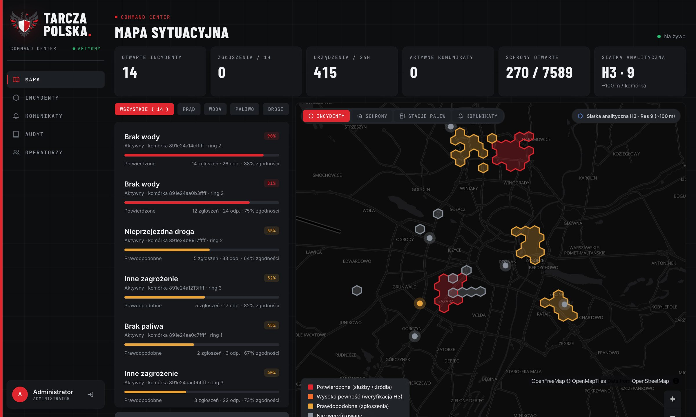
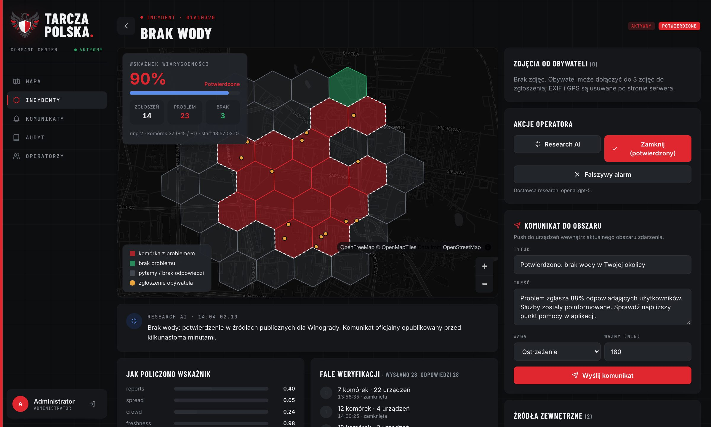

Zamieniamy tysiące lokalnych obserwacji mieszkańców w zweryfikowaną mapę zakłóceń i precyzyjny komunikat dla właściwej strefy.
Podczas awarii informacji nie brakuje. Jest rozproszona, niepełna, szybko się starzeje i trudno ją sprawdzić.
Jedna pętla łączy obywateli, system i operatora. Pojedyncze zgłoszenie to hipoteza, nie fakt.
Obywatel zgłasza prąd, wodę, paliwo, drogę, schron. Typ → lokalizacja → wyślij.
System sam pyta ludzi w okolicy. Do tego źródła publiczne i research AI.
Odpowiedzi TAK / NIE rysują realny zasięg problemu na siatce heksagonów.
Komunikat trafia tylko do urządzeń w wyznaczonej strefie.
Tarcza nie czeka na zgłoszenia. Sama dopytuje, gdzie problem się zaczyna i kończy.
Wskaźnik wiarygodności liczy deterministyczny model. AI dostarcza dowody, a nie wyroki.
Lokalna informacja. Zgłoszenie w trzech krokach. Potwierdzenie jednym dotknięciem.


Każda zależność zewnętrzna ma plan B. Wrażliwe dane nie wychodzą poza panel.
| Brak sieci u obywatela | Paczka offline: schrony w okolicy, aktywne alerty, procedury krok po kroku, z datą ważności. |
| Nie działają pushe | Aplikacja sama pobiera oczekujące pytania (ETag, 304), backend działa bez FCM. |
| Brak AI lub klucza API | Research pominięty z wpisem w logu; potwierdzenia nadal z RSS i od operatora. |
| Padło zewnętrzne API danych | Równoległe serwery zapasowe i lokalna kopia danych regionu. |
| W komórce nikt nie odpowiada | Po dwóch falach komórka przestaje blokować granicę: brak ludzi to brak danych, nie „brak problemu”. |
| Błąd przetwarzania | Asynchroniczne kolejki z ponowieniem i kolejką błędów do inspekcji. |
Nie zastępujemy systemów alarmowych. Uzupełniamy je o lokalną, zweryfikowaną i aktualną informację.